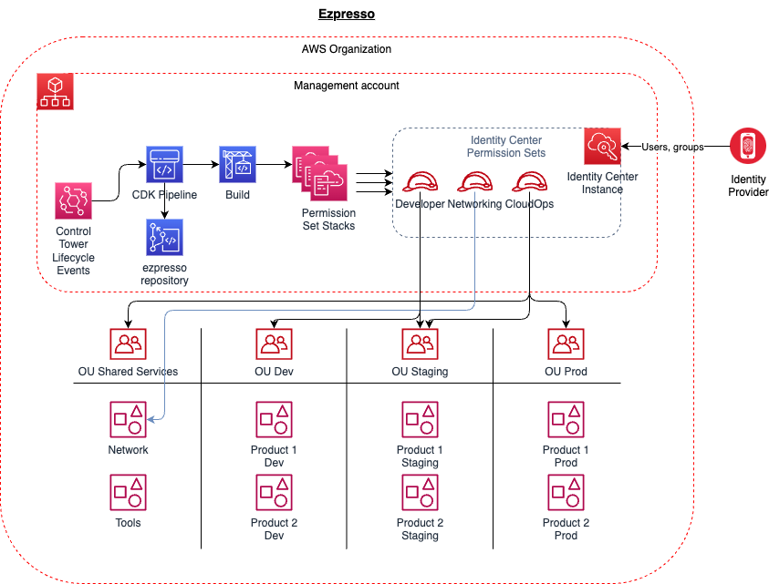

Simply Deploy AWS IAM Identity Center Permission Sets with Ezpresso
With AWS IAM Identity Center, formerly known as AWS Single Sign-On, it became simpler to integrate identity providers such as Azure AD, JumpCloud etc across the whole AWS organization.
Cloudformation support in turn enabled simpler and more consistent, declarative provisioning of Permission Sets in the Organization.
One of the remaining challenges with Permission Sets is to automatically provision them into new accounts or as the Organizational layout changes.
Cue Ezpresso.
Ezpresso is a CDK app built to automatically provision permission sets into an ever-changing AWS Organization and Organizational Unit structure.
Ezpresso enables Identity Center administrators to define SSO permission sets that are mapped to the OU structure of the Organization rather than to individual accounts (although this is also possible).
Definition and mappings are declarative and in YAML file format, which makes it easy to create new permission sets and map them to OUs or directly to accounts as well as to identity provider groups.
When new accounts are added from Control Tower, the CDK app runs automatically to re-evaluate permission set mappings and deploys new mappings as required to the new accounts. In addition, when existing accounts are moved, permission sets are unmapped or re-mapped as required.
This is made possible by the AWS Control Tower Lifecycle Events, which are intercepted as new OUs and accounts are added, and the CDK Pipeline, which is triggered by the events.
Permission sets and OU mappings are defined in a single, simple YAML file.
The following example permissions set is named PowerAccess and includes the managed policy PowerUserAccess and an in-line policy document defined in a JSON file. The permission set is mapped to the Development OU from the root of the organization (/Root). Because recursive is set to true, the permission set is mapped to all sub-accounts and sub-OUs under Development. This includes new accounts that are added later on.
- permission_set_name: PowerAccess
description: "Provides Power access permissions to Development AWS accounts"
session_duration: PT04H
aws_managed_policies:
- arn:aws:iam::aws:policy/PowerUserAccess
inline_policy_document_file: policies/PowerUserAccess.json
ou_assignments:
- path: /Root/Development
recursive: true
group_assignments:
- name: PowerUserAccess
This approach makes it easy to define new permission sets, add permissions and map the permission sets to groups of users from the identity provider.
Architecture Link to heading
The following diagram provides an overview of the Ezpresso architecture.

Where Link to heading
The Ezpresso CDK app can be found in the GitHub virtuability/ezpresso repository. The README includes information on prerequisites and how to deploy the app.
Examples Link to heading
Example configuration exists in the file config/sso-permission-sets.yaml.
Collaboration Link to heading
We have provided a CDK app for easy and automatic deployment of AWS Identity Center permission sets. But we realise that many more features can be added.
We, therefore, encourage people with suggestions to contribute to the project.
Please feel free to create a change or raise an issue and we will review them as quickly as we can.